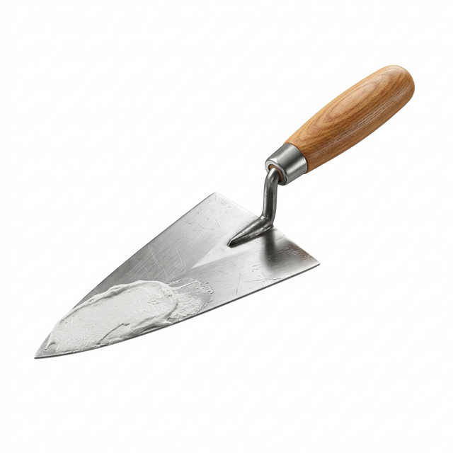

Ghid Expert
27 Martie 2026
Citește în 5 min
Tencuială Mecanizată vs. Manuală: Care merită investiția?
Află de ce tencuiala mecanizată a devenit standardul în construcțiile moderne și cum te poate ajuta să economisești bani și timp la propria casă.
Citește Articolul